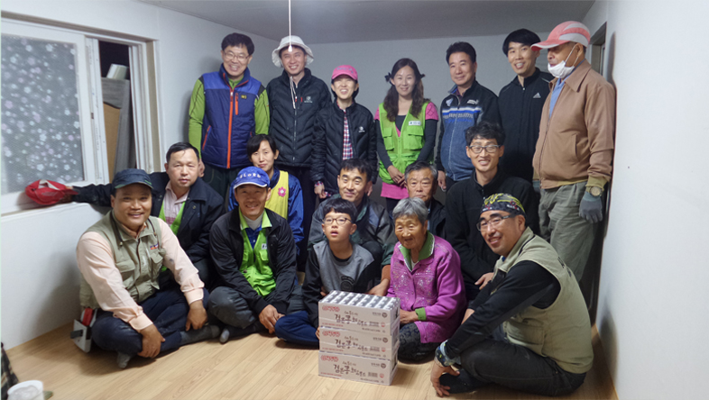
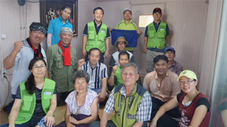
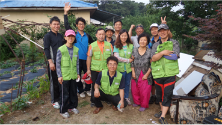
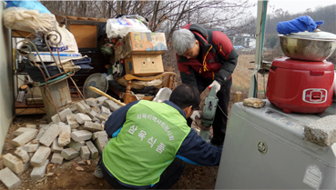

삼육의 사랑은 언제나 옳습니다.
“삼육의 사랑으로 우리 모두 널리 이롭게 합니다.
모두를 따뜻하게 하는 삼육식품은 어머니의 마음입니다.”
삼육식품은 항상 사랑과 나눔을 실천합니다. 따뜻한 삼육은 어머니의 마음입니다.
삼육식품은 수익금의 100%를 인재양성을 위한 교육사업으로 투자하고 있습니다.
또한 1918년 창설된 국제기호 아드라를 통한 지속적인 지원과 자체적인 국내외적 구호봉사활동을 항상 직접 신청하고 있습니다.

삼육의 사랑정신으로
이번겨울 어르신들을 따뜻한
마음을 느끼실 수 있었습니다.
2016.3.31
조회수 407회

2014.4.6
조회수 42,006회

2013.9.10
조회수 1,006회

2012.4.6
조회수 506회